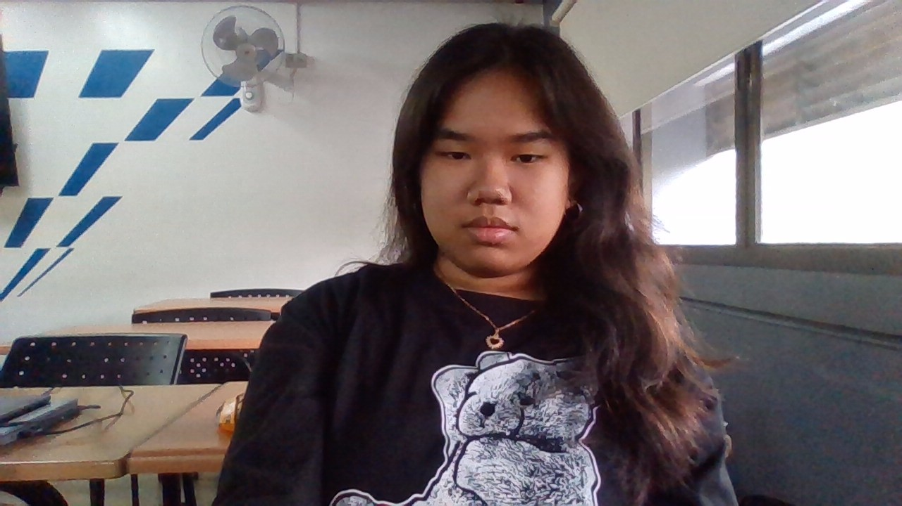

I am Alysa Bernadine M. Reyes. I am a student at Asia Pacific College in Makati.
My hobbies are playing games and watching movies and shows. I also enjoy listening to music while reading comics, webtoons or maybe a book.
My favorite subjects this semester are Practical Research 2 and . I love learning about new technologies and how they can be used to solve real-world problems.